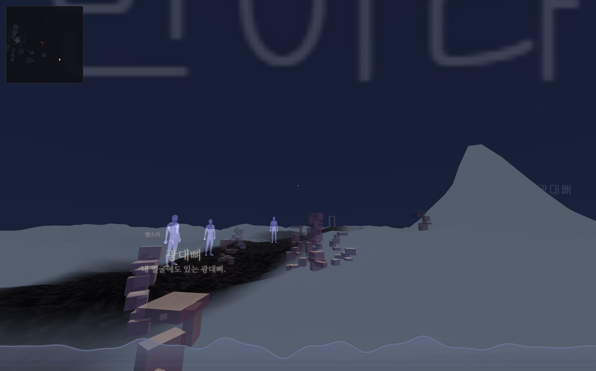
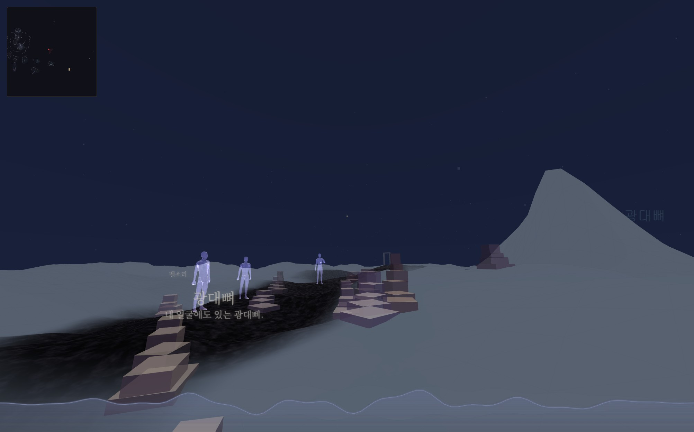
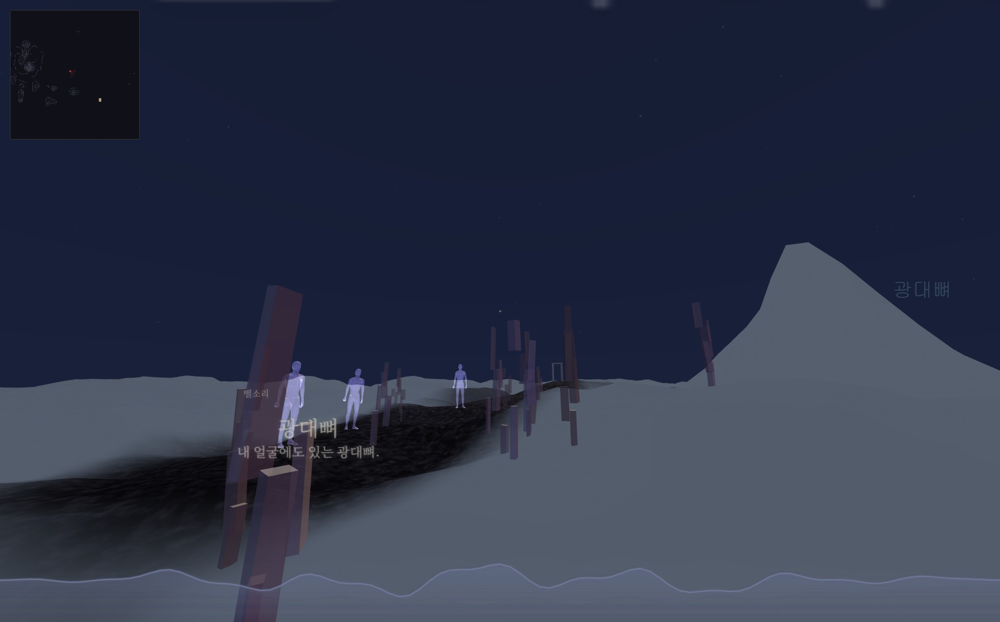
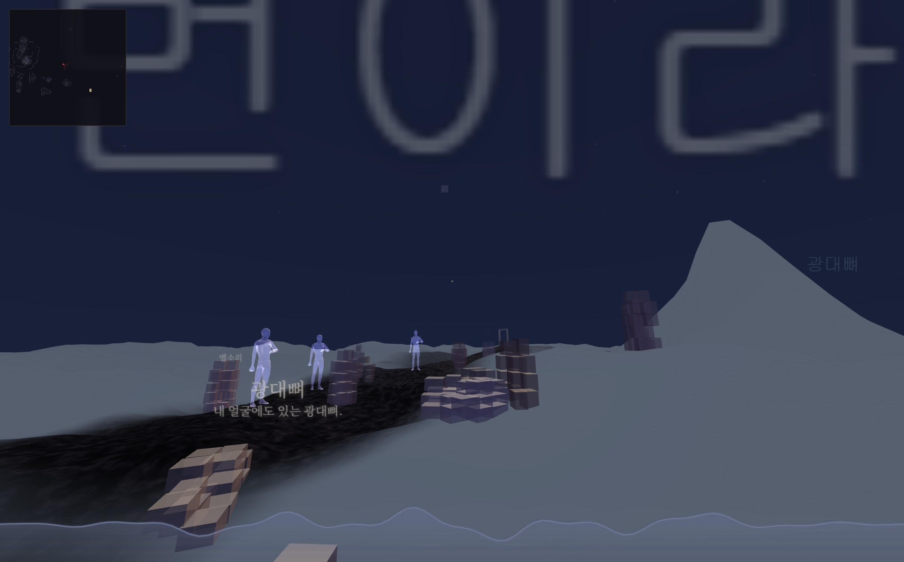

게임 콘솔에서 LumenSceneObjects.setLook('cairn') 처럼 즉시 전환 가능. 팔레트는 두 번째 인자: setLook('cairn','ash') (ocher/ash/bone)
작은 상자 6~14개를 위로 갈수록 좁게 쌓음. 지금까지의 모습.

큼직한 단 4~6개, 위로 갈수록 작게, 거의 안 비뚤게. "사람이 쌓은 흔적".

가늘고 긴 조각들이 사이가 뜬 채 떠오름. "부서진 기억의 부유".

단어마다 기둥/봉분/판/문 중 하나의 윤곽을 정하고 속을 블록으로 채움. "무언가의 형상".
